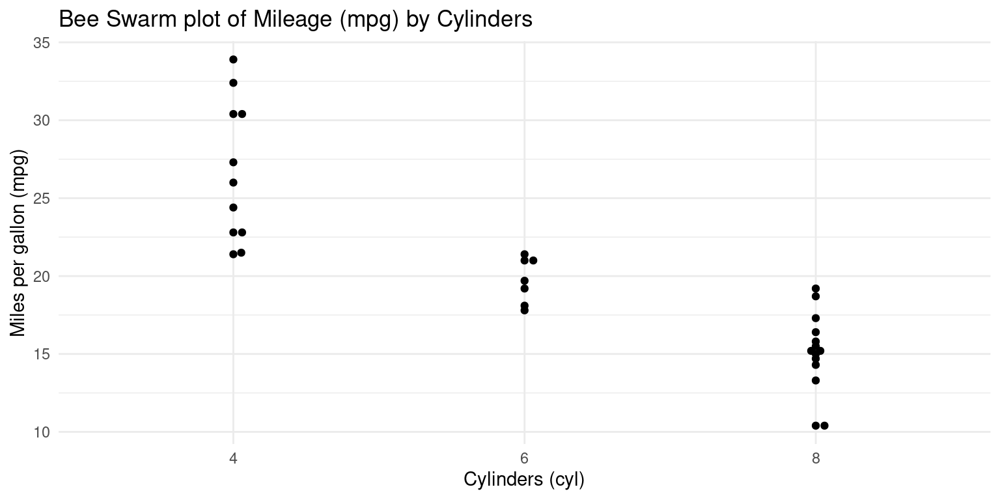
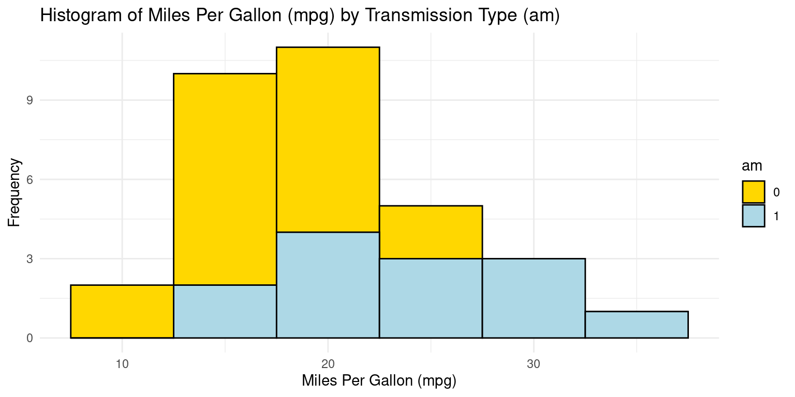
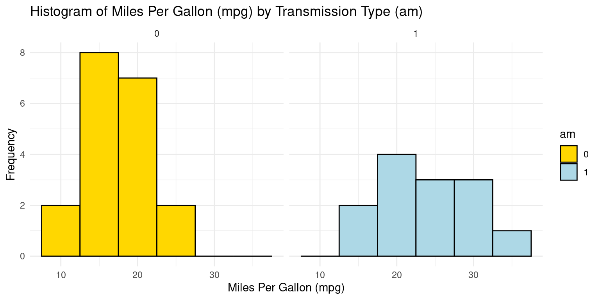
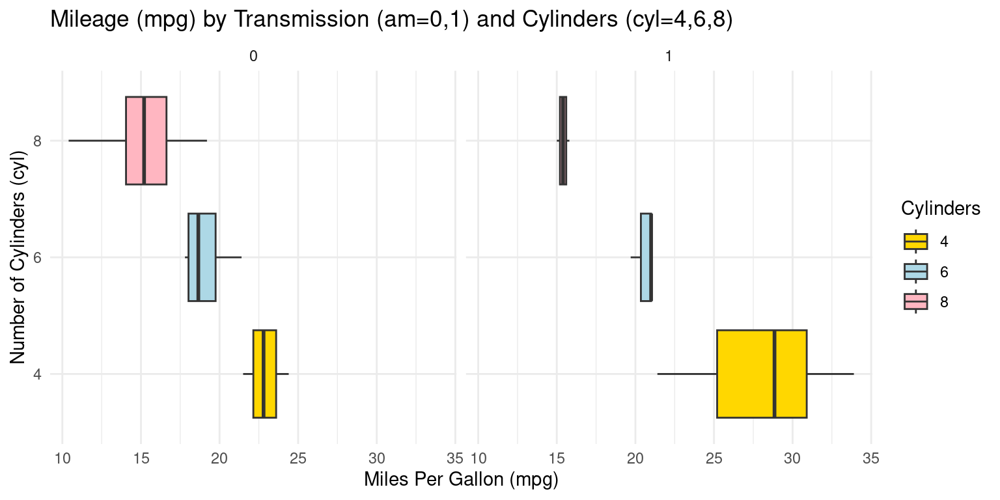
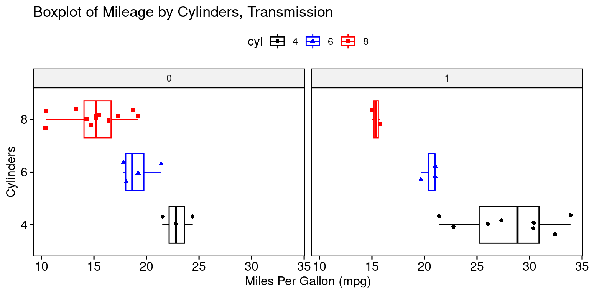
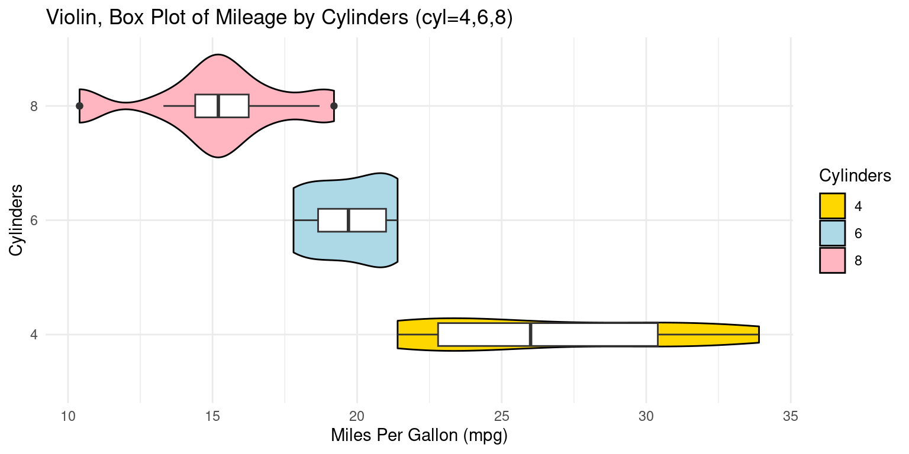
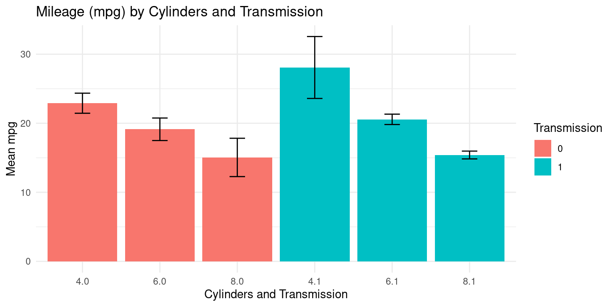
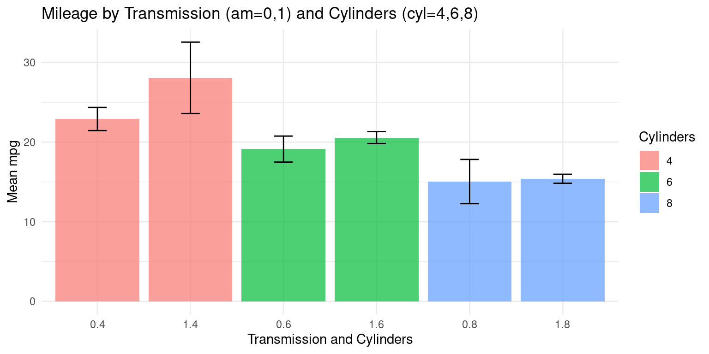

# Load the required libraries, suppressing annoying startup messages
library(dplyr, quietly = TRUE, warn.conflicts = FALSE)
library(tibble, quietly = TRUE, warn.conflicts = FALSE)
library(knitr) # For formatting tables
# Read the mtcars dataset into a tibble called tb
data(mtcars)
tb <- as_tibble(mtcars)
# Convert relevant columns into factor variables
tb$cyl <- as.factor(tb$cyl) # cyl = {4,6,8}, number of cylinders
tb$am <- as.factor(tb$am) # am = {0,1}, 0:automatic, 1: manual transmission
tb$vs <- as.factor(tb$vs) # vs = {0,1}, v-shaped engine, 0:no, 1:yes
tb$gear <- as.factor(tb$gear) # gear = {3,4,5}, number of gears
# Directly access the data columns of tb, without tb$mpg
attach(tb)Bivariate Continuous data (Part 2 of 4)
Chapter 13.
In this chapter, we analyze categorical and continuous data using R’s dplyr and ggplot2 packages. It demonstrates various ggplot2 visualization techniques for continuous data within single categories, including Bee Swarm, Histogram, Probability Density Function (PDF), Cumulative Density Function (CDF), Box plot, and Violin plot.
Next, we use dplyr and ggplot2 for data summarization. This includes calculating and visualizing summary statistics such as the mean and standard deviation. Techniques like line and bar plots with error bars are employed to elucidate relationships. The chapter further extends to bivariate analyses, examining relationships between multiple continuous variables and between different categories. This approach offers an in-depth guide to effectively summarizing and visualizing continuous data in R.
Data: Suppose we run the following code to prepare the mtcars data for subsequent analysis and save it in a tibble called tb. [1]
Visualizing Continuous Data using ggplot2
Let’s take a closer look at some of the most effective ways of visualizing continuous data, across one Category, using ggplot2, including
Bee Swarm plots, using ggplot2;
Histograms, using ggplot2;
PDF and CDF Density plots, using ggplot2;
Box plots, using ggplot2;
Violin plots, using ggplot2;
Bee Swarm Plot across one Category using ggbeeswarm
- Visualizing Median using Box Plot – median weight of the cars broken down by cylinders (
cyl=4,6,8). [2] [3]
# Loading the ggplot2 package for data visualization
library(ggplot2)
Attaching package: 'ggplot2'The following object is masked from 'tb':
mpg# Loading the ggbeeswarm package for beeswarm plot
library(ggbeeswarm)
# Creating a beeswarm plot using ggplot
ggplot(mtcars, # Specifying the data source as 'mtcars' dataset
aes(x = factor(cyl), # Mapping 'cyl' as a factor to the x-axis
y = mpg)) + # Mapping 'mpg' to the y-axis
geom_beeswarm() + # Adding the beeswarm layer
labs(title = "Bee Swarm plot of Mileage (mpg) by Cylinders",
x = "Cylinders (cyl)", # Label for the x-axis
y = "Miles per gallon (mpg)") + # Label for the y-axis
theme_minimal() # Applying a minimal theme to the plot
Histograms across one Category using ggplot2
- Visualizing histograms of car milegage (
mpg) broken down by transmission (am=0,1). [2] [4] [5]
# Using ggplot2 to create a histogram
ggplot(tb, aes(x = mpg, # Setting 'mpg' as the x-axis variable
fill = am)) + # Filling bars based on 'am'
geom_histogram(binwidth = 5,
color = "black") + # histogram with bin width of 5
scale_fill_manual(values = c("gold", "lightblue")) + # setting fill colors
theme_minimal() + # Applying a minimalistic theme
labs(title = "Histogram of Miles Per Gallon (mpg) by Transmission Type (am)",
x = "Miles Per Gallon (mpg)", # Label for the x-axis
y = "Frequency") # Label for the y-axis
- Discussion: If we want separate histograms, we can set facet_wrap(~ am).
# Creating a histogram using ggplot2 with 'tb' dataset
ggplot(tb, aes(x = mpg, # Setting 'mpg' as the x-axis variable
fill = am)) + # Filling bars based on 'am' (transmission type)
geom_histogram(binwidth = 5, color = "black") + # bin width of 5
scale_fill_manual(values = c("gold", "lightblue")) + # fill colors
facet_wrap(~ am) + # Separating the histograms by 'am' value for comparison
theme_minimal() + # Applying a minimalistic theme to the plot
labs(title = "Histogram of Miles Per Gallon (mpg) by Transmission Type (am)",
x = "Miles Per Gallon (mpg)", # Label for the x-axis
y = "Frequency") # Label for the y-axis
Histogram across one Category using ggpubr
# Loading the ggpubr package
library(ggpubr)
# Creating a histogram with enhanced features using gghistogram from ggpubr.
gghistogram(tb,
x = "mpg", # Setting 'mpg' as the variable for histogram.
bins = 6, # Specifying the number of bins.
add = "mean", # Adding a line to indicate the mean .
rug = TRUE, # Adding a rug plot at the bottom .
color = "am", # Setting the color .
fill = "am", # Filling the bars based on 'am'.
alpha = 0.8, # Setting transparency level of the fill.
palette = c("gold", "lightblue"), # Defining a color palette
title = "Histogram of Mileage (mpg) by Transmission (am=0,1)") Histograms across two Categories using ggplot2
- Visualizing histograms of car milegage (
mpg) by transmission (am=0,1) and cylinders (cyl=4,6,8). [2] [4] [5]
ggplot(tb, aes(x = mpg,
fill = am)) +
geom_histogram(binwidth = 3, color = "black") + # bin width of 3
scale_fill_manual(values = c("gold", "lightblue")) + # fill
facet_grid(cyl ~ am) + # grid faceted by 'cyl' and 'am'
theme_minimal() + # Applying a minimalistic theme to the plot
labs(title = "Mileage (mpg) by Transmission (am=0,1) and Cylinders",
x = "Miles Per Gallon (mpg)", # Label for the x-axis
y = "Frequency") # Label for the y-axisPDF across one Category using ggplot2
- Visualizing the Probability Density Functions (PDF) of car milegage (
mpg) by transmission (am=0,1). [2], [5]
# Using ggplot2 to create a density plot
ggplot(tb, aes(x = mpg, # Setting 'mpg' as the x-axis variable
fill = am)) + # Filling the plot based on 'am'
geom_density(color = "black") + # Creating a density plot
scale_fill_manual(values = c("gold", "lightblue")) + # fill colors
facet_wrap(~ am) + # Separating the plots by 'am'
theme_minimal() + # Applying a minimalistic theme to the plot
labs(title = "Density Plot of Mileage (mpg) by Transmission (am=0,1)",
x = "Miles Per Gallon (mpg)", # Label for the x-axis
y = "Density") # Label for the y-axisPDF across one Category using ggpubr
- The provided R code creates a Boxplot of the
mpg(miles per gallon) variable, using theggboxplot()function from theggpubrpackage.
# Loading the ggpubr package
library(ggpubr)
# Creating a density plot with enhanced features using ggdensity from ggpubr.
ggdensity(tb,
x = "mpg", # Setting 'mpg' as the variable for the density plot.
color = "am", # Setting the color of the lines based on 'am'.
fill = "am", # Filling the plot based on 'am'.
add = "mean", # Adding a line for the mean of the distribution.
rug = TRUE, # Adding a rug plot at the bottom
palette = c("gold", "skyblue"), # Defining a color palette
title = "PDF of Mileage (mpg) by Transmission (am=0,1)",
ylab = "Density", # Label for the y-axis.
xlab = "Miles Per Gallon (mpg)" # Label for the x-axis.
)CDF across one Category using ggplot2
- Visualizing the Cumulative Density Functions (CDF) of car milegage (
mpg) by transmission (am=0,1). [2], [5]
# Loading the ggplot2 package for data visualization.
library(ggplot2)
# Creating cumulative distribution function (CDF) plots for 'mpg' based on 'am'.
ggplot(tb, aes(x = mpg,
color = factor(am))) + # Mapping 'mpg' to x-axis
stat_ecdf(geom = "line") + # Using 'stat_ecdf' to compute CDF.
scale_color_manual(values = c("blue", "black")) + # colors
labs(x = "Miles Per Gallon (mpg)", y = "CDF", # Setting labels .
title = "CDF of Mileage (mpg) by Transmission (am=0,1)",
color = "am") + # Labeling the color legend as 'am'.
theme_minimal() # Applying a minimalistic theme to the plot.Box Plot across one Category using ggplot2
- Visualizing Boxplots of car milegage (
mpg) broken down by cylinders (cyl=4,6,8). [2], [6]
# Loading the ggplot2 package for data visualization.
library(ggplot2)
# Creating a boxplot using ggplot2.
ggplot(tb, aes(x = cyl, # Setting 'cyl' as the x-axis variable
y = mpg)) + # Setting 'mpg' as the y-axis variable
geom_boxplot(fill = c("gold", "lightblue", "lightpink"), # fill colors
color = "black") + # Setting the color of the box borders
coord_flip() + # Flipping the coordinates to make the boxplot horizontal
labs(title = "Boxplot of Mileage (mpg) by Cylinders (cyl=4,6,8)",
y = "Miles Per Gallon (mpg)", # Label y-axis (flipped to x-axis)
x = "Cylinders") + # Label for the x-axis (flipped to y-axis)
theme_minimal() # Applying a minimalistic theme to the plotBox Plot across one Category using ggpubr
- The provided R code creates a Boxplot of the
mpg(miles per gallon) variable, using theggboxplot()function from theggpubrpackage. [2], [6]
# Loading the ggpubr package
library(ggpubr)
# Creating a boxplot with enhanced features using ggboxplot from ggpubr.
ggboxplot(tb,
y = "mpg", # Setting 'mpg' as the y-axis variable.
x = "cyl", # Setting 'cyl' as the x-axis variable.
color = "cyl", # Setting the outline color of the boxes.
fill = "white", # Setting the fill color of the boxes to white.
palette = c("black", "blue", "red"), # Defining a color palette.
shape = "cyl", # Defining the shape of data points based on 'cyl'.
orientation = "horizontal", # Setting the orientation.
add = "jitter", # Adding jitter to display individual points.
title = "Boxplot of Mileage (mpg) by Cylinders (cyl=4,6,8)",
ylab = "Miles Per Gallon (mpg)", # Label for the y-axis.
xlab = "Cylinders" # Label for the x-axis.
)
Box Plot across two Categories using ggplot2
- Visualizing Boxplots of car milegage (
mpg) broken down by cylinders (cyl=4,6,8) and Transmission (am=0,1). [2], [6]
# Creating a boxplot using ggplot2
ggplot(tb,
aes(x = as.factor(am),
y = mpg, # Mapping 'am' and 'mpg' to x and y axes
fill = as.factor(am))) + # filling boxplots based on 'am'.
geom_boxplot() + # Adding the boxplot layer.
scale_fill_manual(values = c("gold", "lightblue"),
name = "Transmission") + # fill colors
facet_grid(~ cyl) + # grid of boxplots faceted by 'cyl'
theme_minimal() + # a minimalistic theme for a cleaner look.
labs(title = "Mileage by Cylinders (cyl=4,6,8) and Transmission (am=0,1)",
x = "Transmission Type (am)", # Label for the x-axis.
y = "Miles Per Gallon (mpg)") # Label for the y-axis.Alternately:
# Creating a boxplot using ggplot2
ggplot(tb, aes(x = as.factor(cyl),
y = mpg, # Mapping 'cyl' and 'mpg' to x and y axes
fill = as.factor(cyl))) + # filling boxplots based on 'cyl'
geom_boxplot() + # Adding the boxplot layer.
scale_fill_manual(values = c("gold", "lightblue", "lightpink"),
name = "Cylinders") + # fill colors
facet_grid(~ am) + # Grid of boxplots faceted by 'am' (transmission)
theme_minimal() + # Applying a minimalistic theme for a cleaner look.
coord_flip() + # Flipping the coordinates to make the boxplot horizontal.
labs(title = "Mileage (mpg) by Transmission (am=0,1) and Cylinders (cyl=4,6,8)",
x = "Number of Cylinders (cyl)", # Label for the x-axis.
y = "Miles Per Gallon (mpg)") # Label for the y-axis.
Box Plot across two Categories using ggpubr
- The provided R code creates Boxplots of the
mpg(miles per gallon) variable, using theggboxplot()function from theggpubrpackage.
# Loading the ggpubr package for enhanced ggplot2 functionalities.
library(ggpubr)
# Creating a boxplot with additional features using ggboxplot from ggpubr.
ggboxplot(tb,
y = "mpg", # Setting 'mpg' as the y-axis variable.
x = "cyl", # Setting 'cyl' as the x-axis variable.
color = "cyl", # Setting the outline color of the boxes
fill = "white", # Setting the fill color of the boxes to white.
palette = c("black", "blue", "red"), # Defining a color palette
shape = "cyl", # Defining the shape of data points
orientation = "horizontal", # Setting the orientation
add = "jitter", # Adding jitter .
facet.by = "am", # Faceting the plot by 'am' .
title = "Boxplot of Mileage by Cylinders, Transmission",
ylab = "Miles Per Gallon (mpg)", # Label for the y-axis.
xlab = "Cylinders" # Label for the x-axis.
)
# Loading the ggpubr package for enhanced ggplot2 functionalities.
library(ggpubr)
# Creating a boxplot with additional features using ggboxplot from ggpubr.
ggboxplot(tb,
y = "mpg", # Setting 'mpg' as the y-axis variable.
x = "am", # Setting 'am' as the x-axis variable.
color = "am", # Setting the outline color of the boxes
fill = "white", # Setting the fill color of the boxes.
palette = c("black", "blue"), # Defining a color palette .
shape = "am", # Defining the shape of data points based on 'am'.
orientation = "horizontal", # Setting the orientation
add = "jitter", # Adding jitter
facet.by = "cyl", # Faceting the plot by 'cyl' .
title = "Boxplot of Mileage by Transmission, Cylinders",
ylab = "Miles Per Gallon (mpg)", # Label for the y-axis.
xlab = "Transmission" # Label for the x-axis.
)Violin Plot across one Category using ggplot2
- We can embed boxplots within the above Violin plots, as follows. [2], [6]
# Loading the ggplot2 package for data visualization.
library(ggplot2)
# Creating a combined plot of violin and box plots using ggplot.
ggplot(tb, aes(x = factor(cyl), # Setting 'cyl' as the x-axis variable,
y = mpg)) + # Setting 'mpg' as the y-axis variable.
geom_violin(aes(fill = factor(cyl)), # Creating violin plots, .
color = "black") + # Setting the outline color
scale_fill_manual(values = c("gold", "lightblue", "lightpink"),
name = "Cylinders") + # Setting the legend title.
geom_boxplot(width = 0.2, # Adding box plots with specified width.
fill = "white") + # Setting the box fill color to white.
coord_flip() + # Flipping the coordinates to create horizontal plots.
labs(title = "Violin, Box Plot of Mileage by Cylinders (cyl=4,6,8)",
y = "Miles Per Gallon (mpg)", # Label for the y-axis.
x = "Cylinders") + # Label for the x-axis.
theme_minimal() # Applying a minimal theme to the plot.
Summarizing Continuous Data using dplyr and ggplot2
Across one Category using dplyr and ggplot2
- Calculating the mean and standard deviation
- We demonstrate the bivariate relationship between Miles Per Gallon (
mpg) and Cylinders (cyl) usingggplot2. [1], [2]
# Loading the dplyr package for data manipulation.
suppressPackageStartupMessages(library(dplyr))
# Using dplyr to calculate summary statistics for 'mpg' grouped by 'cyl'.
s1 <- tb %>%
group_by(cyl) %>% # Grouping the data by 'cyl'.
summarise(Mean_mpg = mean(mpg, na.rm = TRUE),
SD_mpg = sd(mpg, na.rm = TRUE))
# Creating a table using the kable function with specified formatting.
kable(s1,
digits = 2,
caption = "Summary Statistics of Mileage (mpg) by Cylinders")| cyl | Mean_mpg | SD_mpg |
|---|---|---|
| 4 | 26.66 | 4.51 |
| 6 | 19.74 | 1.45 |
| 8 | 15.10 | 2.56 |
- Discussion:
In this code, we use the pipe operator
%\>%to perform a series of operations. We first group the data by thecylcolumn using thegroup_by()function. We then usesummarise()to apply themean()andsd()functions to thempgcolumn.The results are stored in new columns, aptly named
Mean_mpgandSD_mpg.We set
na.rm = TRUEin bothmean()andsd()function calls, to remove any missing values before calculation.The data resulting from the above code consists of grouped cylinder counts (
cyl), their corresponding mean miles per gallon (Mean_mpg), and the standard deviation of miles per gallon (SD_mpg). [1], [2]
- Visualizing the mean and standard deviation
- A simple way to visualize this data is to create a line plot for the mean miles per gallon with error bars indicating the standard deviation. Here is an example of how we could do this with
ggplot2:
# Loading the ggplot2 package for data visualization.
suppressPackageStartupMessages(library(ggplot2))
# Creating a line plot with error bars to visualize the Mean and SD.
ggplot(s1,
aes(x = cyl, y = Mean_mpg)) + # Defining the x and y aesthetics.
geom_line(group = 1, color = "blue") + # blue line connecting points.
geom_point(size = 2, color = "red") + # red points for the mean
geom_errorbar(aes(ymin = Mean_mpg - SD_mpg,
ymax = Mean_mpg + SD_mpg),
width = 0.2, colour = "black") + # Adding error bars
labs(x = "Cylinders", y = "Mean mpg", # Labeling the axes
title = "Mean and SD of Mileage (mpg) by #Cylinders") +
theme_minimal() # Applying a minimal theme to the plot.- Discussion:
aes(x = cyl, y = Mean_mpg)assigns thecylvalues to the x-axis andMean_mpgto the y-axis.geom_line(group=1, color = "blue")adds a blue line connecting the data points.geom_point(size = 2, color = "red")adds red points for each data point.geom_errorbar(aes(ymin = Mean_mpg - SD_mpg, ymax = Mean_mpg + SD_mpg), width = .2, colour = "black")adds error bars, where the error is the standard deviation.The
yminandymaxarguments define the range of the error bars.labs(x = "Cylinders", y = "Mean mpg")labels the x and y axes.theme_minimal()applies a minimal theme to the plot. [1], [2]
- Visualizing the mean and standard deviation - Alternate Method
- An alternate method is to visualize this mean by creating a bar plot, with error bars indicating the standard deviation. Here is an example of how we could do this with
ggplot2:
# Loading the ggplot2 package for data visualization.
library(ggplot2)
# Creating a bar plot with error bars to visualize the Mean and SD.
ggplot(s1,
aes(x = cyl, y = Mean_mpg)) + # Defining the x and y aesthetics.
geom_bar(stat = "identity",
fill = "gold") + # Creating a bar plot with gold-colored bars.
geom_errorbar(aes(ymin = Mean_mpg - SD_mpg,
ymax = Mean_mpg + SD_mpg),
width = 0.2) + # Adding error bars .
labs(x = "Cylinders", y = "Mean mpg", # Labeling the axes
title = "Mean and SD of Mileage (mpg) by #Cylinders") +
theme_minimal() # Applying a minimal theme to the plot.- Discussion:
ggplot(s1, aes(x = cyl, y = Mean_mpg)): Theggplot()function initializes a ggplot object using dataframes1and mapping aesthetic elements. Here,aes(x = cyl, y = Mean_mpg)specifies that the x-axis representscyl(number of cylinders) and the y-axis representsMean_mpg(mean miles per gallon).geom_bar(stat = "identity", fill = "gold"): Thegeom_bar()function is used to create a bar chart. Settingstat = "identity"indicates that the heights of the bars represent the values in the data (in this case,Mean_mpg). Thefill = "gold"argument sets the color of the bars.geom_errorbar()adds error bars to the plot. The argumentsaes(ymin = Mean_mpg - SD_mpg, ymax = Mean_mpg + SD_mpg)set the bottom (ymin) and top (ymax) of the error bars to represent one standard deviation below and above the mean, respectively.width = .2sets the horizontal width of the error bars.labs(x = "Cylinders", y = "Mean mpg"): Thelabs()function is used to specify the labels for the x-axis and y-axis.theme_minimal(): Thetheme_minimal()function is used to set a minimalistic theme for the plot. [1], [2]
- We extend this code to demonstrate how to measure the bivariate relationships between multiple continuous variables from the mtcars data and the categorical variable number of Cylinders (
cyl), usingggplot2. Specifically, we want to measure the mean and SD of continuous variables (i) Miles Per Gallon (mpg); (ii) Weight (wt); (iii) Horsepower (hp) across the number of Cylinders (cyl).
# Loading the dplyr package for data manipulation.
library(dplyr)
# Calculating summary statistics for Mileage (mpg), Weight (wt), and
# Horsepower (hp) grouped by Cylinders (cyl).
s3 <- tb %>%
group_by(cyl) %>%
summarise(
Mean_mpg = mean(mpg, na.rm = TRUE), # mean of Mileage (mpg).
SD_mpg = sd(mpg, na.rm = TRUE), # standard deviation of Mileage
Mean_wt = mean(wt, na.rm = TRUE), # mean of Weight (wt).
SD_wt = sd(wt, na.rm = TRUE), # standard deviation of Weight (wt).
Mean_hp = mean(hp, na.rm = TRUE), # mean of Horsepower (hp).
SD_hp = sd(hp, na.rm = TRUE) # standard deviation of (hp).
)
# Creating a table (kable) to display the summary statistics.
kable(s3,
digits = 2,
caption = "Summary of Mileage, Weight, Horsepower by Cylinders")| cyl | Mean_mpg | SD_mpg | Mean_wt | SD_wt | Mean_hp | SD_hp |
|---|---|---|---|---|---|---|
| 4 | 26.66 | 4.51 | 2.29 | 0.57 | 82.64 | 20.93 |
| 6 | 19.74 | 1.45 | 3.12 | 0.36 | 122.29 | 24.26 |
| 8 | 15.10 | 2.56 | 4.00 | 0.76 | 209.21 | 50.98 |
- Discussion:
With
tb %>%, we indicate that we are going to perform a series of operations on thetbdata frame. Thegroup_by(cyl)groups the data by thecylvariable.The
summarise()function calculates the mean and standard deviation (SD) of three variables (mpg,wt, andhp). Thena.rm = TRUEargument insidemean()andsd()functions is used to exclude any NA values from these calculations.The resulting calculations are assigned to new variables (
Mean_mpg,SD_mpg,Mean_wt,SD_wt,Mean_hp, andSD_hp) which will be the columns in the summarised data frame.To summarize, this script groups the data in the
tbtibble bycyland then calculates the mean and standard deviation of thempg,wt, andhpvariables for each group. [1], [2]
Across two Categories using ggplot2
- We demonstrate the relationship between Miles Per Gallon (
mpg) and Cylinders (cyl) and Transmission type (am) usingggplot2. Recall that a car’s transmission may be automatic (am=0) or manual (am=1). [1], [2]
# Loading the dplyr package for data manipulation.
library(dplyr)
# Calculating summary statistics for Mileage (mpg)
# grouped by Cylinders (cyl) and Transmission (am).
s4 <- tb %>%
group_by(cyl, am) %>%
summarise(
Mean_mpg = mean(mpg, na.rm = TRUE), # Calculating the mean.
SD_mpg = sd(mpg, na.rm = TRUE) # Calculating the standard deviation
)`summarise()` has grouped output by 'cyl'. You can override using the `.groups`
argument.# Creating a table (kable) to display the summary statistics
kable(s4,
digits = 2,
caption = "Summary of Mileage (mpg) by Cylinders and Transmission")| cyl | am | Mean_mpg | SD_mpg |
|---|---|---|---|
| 4 | 0 | 22.90 | 1.45 |
| 4 | 1 | 28.08 | 4.48 |
| 6 | 0 | 19.12 | 1.63 |
| 6 | 1 | 20.57 | 0.75 |
| 8 | 0 | 15.05 | 2.77 |
| 8 | 1 | 15.40 | 0.57 |
- Discussion:
The above code provides the mean and standard deviation of
mpgfor each unique combination ofcylandam. [1], [2]Here is how it can be visualized:
# Create the plot using ggplot2
# Create an interaction variable for 'cyl' and 'am'
ggplot(s4, aes(x = interaction(cyl, am),
y = Mean_mpg, # Set 'Mean_mpg' as the y-axis variable
fill = as.factor(am))) + # Fill bars by the 'am' factor
geom_bar(stat = "identity", # Use the "identity" statistic to plot the bars
position = position_dodge()) + # Dodge the bars for each 'am' level
geom_errorbar(aes(ymin = Mean_mpg - SD_mpg, # Add error bars
ymax = Mean_mpg + SD_mpg),
width = .2, # Set the width of error bars
position = position_dodge(.9)) + # Dodge error bars
labs(x = "Cylinders and Transmission", # Set x-axis label
y = "Mean mpg", # Set y-axis label
fill = "Transmission", # Set legend title for fill color
title = "Mileage (mpg) by Cylinders and Transmission") +
theme_minimal() # Use the minimal theme for the plot
- In the below code, the order of the variables is reversed - the data is first grouped by
am, then bycyl. So, the function first sorts the data by theamvariable, and within eachamgroup, it further groups the data bycyl. [1], [2]
# Load the dplyr library for data manipulation
library(dplyr)
# Group the dataframe by 'am', 'cyl' columns and calculate summary statistics
s5 <- tb %>%
group_by(am, cyl) %>%
summarise(Mean_mpg = mean(mpg, na.rm = TRUE), # Calculate mean 'mpg'
SD_mpg = sd(mpg, na.rm = TRUE)) # Calculate standard deviation `summarise()` has grouped output by 'am'. You can override using the `.groups`
argument.# Create a table (kable) of the summary statistics with specified formatting
kable(s5,
digits = 2, # Set the number of digits to display
caption = "Summary of Mileage (mpg) by Transmission and Cylinders") | am | cyl | Mean_mpg | SD_mpg |
|---|---|---|---|
| 0 | 4 | 22.90 | 1.45 |
| 0 | 6 | 19.12 | 1.63 |
| 0 | 8 | 15.05 | 2.77 |
| 1 | 4 | 28.08 | 4.48 |
| 1 | 6 | 20.57 | 0.75 |
| 1 | 8 | 15.40 | 0.57 |
- Here is how it can be visualized:
# Create the plot using ggplot2
ggplot(s5,
aes(x = interaction(am, cyl), # 'am' and 'cyl' as the x-axis variable
y = Mean_mpg, # Mean 'mpg' as the y-axis variable
fill = as.factor(cyl))) + # Fill the bars by 'cyl' (Cylinders)
geom_bar(stat = "identity", # Create a bar plot with actual data values
alpha = 0.7, # Set the transparency of bars to 0.7
position = position_dodge()) + # Dodge bars for better visualization
geom_errorbar(aes(ymin = Mean_mpg - SD_mpg, # Add error bars
ymax = Mean_mpg + SD_mpg),
width = .2, # Set the width of the error bars
position = position_dodge(.9)) + # Dodge error bars
labs(x = "Transmission and Cylinders", # Set the x-axis label
y = "Mean mpg", # Set the y-axis label
fill = "Cylinders", # Set the legend label for fill color
title = "Mileage by Transmission (am=0,1) and Cylinders (cyl=4,6,8)") +
theme_minimal() # Use a minimal theme for the plot
- The following code produces a new data frame that contains the mean and standard deviation of the continuous variables
mpg,wt, andhpfor each combination of the factor variablesamandcyl. [1], [2]
# Summary statistics 'mpg', 'wt', 'hp' by Transmission (am) and Cylinders (cyl)
s6 <- tb %>%
group_by(am, cyl) %>%
summarise(
Mean_mpg = mean(mpg, na.rm = TRUE), # Calculate mean 'mpg'
SD_mpg = sd(mpg, na.rm = TRUE), # Calculate standard deviation of 'mpg'
Mean_wt = mean(wt, na.rm = TRUE), # Calculate mean 'wt' (weight)
SD_wt = sd(wt, na.rm = TRUE), # Calculate standard deviation of 'wt'
Mean_hp = mean(hp, na.rm = TRUE), # Calculate mean 'hp' (horsepower)
SD_hp = sd(hp, na.rm = TRUE) # Calculate standard deviation of 'hp'
)`summarise()` has grouped output by 'am'. You can override using the `.groups`
argument.# Create a table (kable) to display the summary statistics
kable(s6,
digits=2, # Set the number of decimal digits to display
caption = "mpg, wt, hp by am (am=0,1), cyl (cyl=4,6,8)")| am | cyl | Mean_mpg | SD_mpg | Mean_wt | SD_wt | Mean_hp | SD_hp |
|---|---|---|---|---|---|---|---|
| 0 | 4 | 22.90 | 1.45 | 2.94 | 0.41 | 84.67 | 19.66 |
| 0 | 6 | 19.12 | 1.63 | 3.39 | 0.12 | 115.25 | 9.18 |
| 0 | 8 | 15.05 | 2.77 | 4.10 | 0.77 | 194.17 | 33.36 |
| 1 | 4 | 28.08 | 4.48 | 2.04 | 0.41 | 81.88 | 22.66 |
| 1 | 6 | 20.57 | 0.75 | 2.76 | 0.13 | 131.67 | 37.53 |
| 1 | 8 | 15.40 | 0.57 | 3.37 | 0.28 | 299.50 | 50.20 |
Summary of Chapter 13 – Bivariate Continuous data (Part 2 of 4)
In this chapter, we delve into the analysis of categorical and continuous data using the versatile R packages dplyr and ggplot2. To begin, we prepare the mtcars dataset and save it as a tibble named tb. After converting relevant columns into factor variables, we can directly access the data columns without referencing tb$ for each variable.
We then explore various visualization techniques for continuous data within one category, employing ggplot2. These techniques include Bee Swarm plots, Histograms, Probability Density Functions (PDF), Cumulative Density Functions (CDF), Box plots, and Violin plots. For instance, we create a Bee Swarm plot to visualize the median weight of cars categorized by the number of cylinders (cyl). Additionally, we construct histograms to display car mileage (mpg) breakdown by transmission type (am), using separate histograms for each transmission category for easier comparison. The PDF and CDF plots showcase the distribution of mpg with distinct colors representing transmission types. Box plots and Violin plots provide insights into mileage distribution across different cylinder counts and transmission types.
We then delve into summarizing continuous data using dplyr and ggplot2. Within one category, such as the number of cylinders (cyl), we calculate and visualize summary statistics like the mean and standard deviation of car mileage (mpg). We generate line plots and bar plots with error bars, highlighting the relationship between cyl and the mean mpg. An alternative method of measuring bivariate relationships extends the analysis to multiple continuous variables, namely mpg, wt (weight), and hp (horsepower) across cyl. A similar approach is taken for relationships across two categories, where we explore the interaction between cyl and transmission type (am). This analysis provides a comprehensive understanding of how to summarize and visualize continuous data.
References
Basic R Programming:
[1] Chambers, J. M. (2008). Software for Data Analysis: Programming with R (Vol. 2, No. 1). Springer.
Crawley, M. J. (2012). The R Book. John Wiley & Sons.
Gardener, M. (2012). Beginning R: The Statistical Programming Language. John Wiley & Sons.
Grolemund, G. (2014). Hands-On Programming with R: Write Your Own Functions and Simulations. O’Reilly Media, Inc.
Kabacoff, R. (2022). R in Action: Data Analysis and Graphics with R and Tidyverse. Simon and Schuster.
Peng, R. D. (2016). R Programming for Data Science (pp. 86-181). Leanpub.
R Core Team. (2020). R: A Language and Environment for Statistical Computing. R Foundation for Statistical Computing. Retrieved from https://www.R-project.org/.
Tippmann, S. (2015). Programming Tools: Adventures with R. Nature, 517(7532), 109-110.
Wickham, H., Çetinkaya-Rundel, M., & Grolemund, G. (2023). R for Data Science. O’Reilly Media, Inc.
ggplot2:
[2] Wickham, H. (2016). ggplot2: Elegant Graphics for Data Analysis. Springer-Verlag New York. Retrieved from https://ggplot2.tidyverse.org
Wickham, H., & Grolemund, G. (2016). R for Data Science: Import, Tidy, Transform, Visualize, and Model Data. O’Reilly Media.
Wickham, H. (2020). ggplot2: Create Elegant Data Visualisations Using the Grammar of Graphics (Version 3.3.2) [Computer Software]. Retrieved from https://CRAN.R-project.org/package=ggplot2
Wickham, H., et al. (2020). dplyr: A Grammar of Data Manipulation (Version 1.0.2) [Computer Software]. Retrieved from https://CRAN.R-project.org/package=dplyr
Wilkinson, L. (2005). The Grammar of Graphics (2nd ed.). Springer-Verlag.
Wickham, H., et al. (2020). tibble: Simple Data Frames (Version 3.0.3) [Computer Software]. Retrieved from https://CRAN.R-project.org/package=tibble
beeswarm:
[3] Eklund, A. (2020). ggbeeswarm: Categorical Scatter (Violin Point) Plots. R Package Version 0.6.0. Retrieved from https://CRAN.R-project.org/package=ggbeeswarm
Histograms:
[4] Scott, D. W. (1979). On Optimal and Data-Based Histograms. Biometrika, 66(3), 605-610.
Wand, M. P., & Jones, M. C. (1995). Kernel Smoothing. Chapman and Hall/CRC.
ggpubr:
[5] Kassambara, A. (2023). ggpubr: ‘ggplot2’ Based Publication Ready Plots. R Package Version 0.6.0. Retrieved from https://rpkgs.datanovia.com/ggpubr/.
Box Plots:
[6] McGill, R., Tukey, J. W., & Larsen, W. A. (1978). Variations of Box Plots. The American Statistician, 32(1), 12-16.
Appendix A
Appendix A1: Violin Plot across two Categories using ggplot2
- We can embed boxplots within the above Violin plots, as follows.
# Load the ggplot2 library
library(ggplot2)
# Violin plot and box plot of 'mpg' by 'cylinders' and 'am' (Transmission)
ggplot(tb, aes(x = factor(cyl), y = mpg)) +
geom_violin(aes(fill = factor(cyl)), color = "black") +
scale_fill_manual(values = c("gold", "lightblue", "lightpink"),
name = "Cylinders") +
geom_boxplot(width = 0.2,
fill = "white") + # A box plot with specified width, color
coord_flip() + # Flip the coordinates to create horizontal plots
labs(title = "Violin, Box Plot of Mileage (mpg) by cyl and am",
y = "Miles Per Gallon (mpg)", # Label for the y-axis
x = "Cylinders") + # Label for the x-axis
facet_grid(am ~ .,
scales = "free_y",
space = "free_y",
# Create facets for 'am' (Transmission), scales and spacing
labeller = labeller(
am = function(x) ifelse(x == 0, "Automatic", "Manual")
)) +
theme_minimal() # Use a minimal theme for the plot
- Alternately, We can embed boxplots within the above Violin plots, as follows.
# Load the ggplot2 and dplyr libraries
library(ggplot2)
library(dplyr)
# Modify the data first: Convert 'am' to factor with custom labels
tb_modified <- tb %>%
mutate(am = factor(am, levels = c(0, 1), labels = c("Automatic", "Manual")))
# Create the plot
ggplot(tb_modified,
aes(x = factor(cyl),
y = mpg)) +
geom_violin(aes(fill = factor(cyl)),
color = "black") + # Create a violin plot by 'cylinders'
scale_fill_manual(values = c("gold", "lightblue", "lightpink"),
name = "Cylinders") + # Set custom fill colors
geom_boxplot(width = 0.2, fill = "white") + # Create a box plot
coord_flip() + # Flip the coordinates to create horizontal plots
labs(title = "Violin, Box Plot of Mileage (mpg) by cyl and am",
y = "Miles Per Gallon (mpg)", # Label for the y-axis
x = "Cylinders") + # Label for the x-axis
facet_grid(am ~ .,
scales = "free_y",
space = "free_y") + # Create facets for 'am' (Transmission)
theme_minimal() # Use a minimal theme for the plot